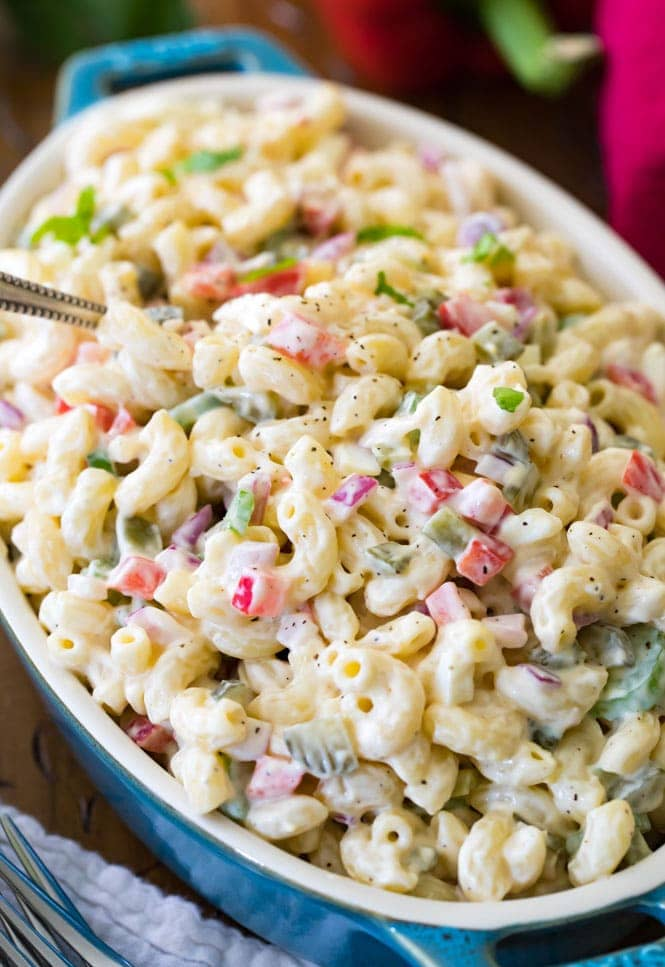

Macaroni Salad

What Is Macaroni Salad?
This is a classic, tasty, and oh-so easy macaroni salad recipe!
Made with classic ingredient staples including celery, red pepper,
and onion and dressed up in a simple creamy mayo-based dressing,
this is guaranteed to be a hit at every cookout and potluck this year!
Macaroni salad is a party/potluck/cookout staple, no get-together is complete
without a giant chilled bowl, and today I’ll show you how I make my favorite recipe
and the perfectly creamy, slightly sweet dressing that goes along with it.
Ingredients
- Elbow macaroni
- Sweet pickles
- Red pepper
- Celery
- Red onion
- Hard boiled eggs or shredded or diced cheddar cheese
- A homemade mayo-based macaroni salad dressing
Steps
- Prepare macaroni noodles according to package instructions.
Drain and rinse immediately with cold water, then drizzle with a
teaspoon of olive oil and gently stir so the noodles don't stick together
as they sit.
- In a large bowl, combine macaroni noodles, sweet pickles, red pepper,
celery, red onion, and eggs. Stir until well-combined. Set aside and
prepare your dressing.
- To prepare your macaroni salad dressing, combine mayonnaise, sour cream,
red wine vinegar, sweet pickle juice, sugar, dijon mustard, salt, pepper,
garlic powder, and crushed red pepper (if using) in a medium-sized bowl.
Whisk until ingredients are well-combined.
- Pour dressing over your macaroni salad ingredients and toss until well-combined.
- For best flavor, cover bowl and allow macaroni salad to chill for at least
one hour. Stir once more before serving and enjoy!